Soru 1Cevap: D
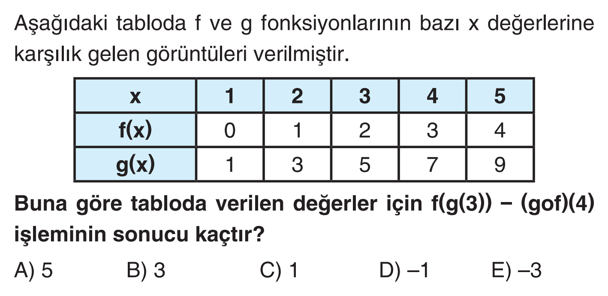
Çözüm
- $g(3)=5$, $f(5)=4$: $f(g(3))=4$.
- $f(4)=3$, $g(3)=5$: $(g\circ f)(4)=5$.
- $4-5=-1$ (D).
Cevap: D
Soru 2Cevap: D
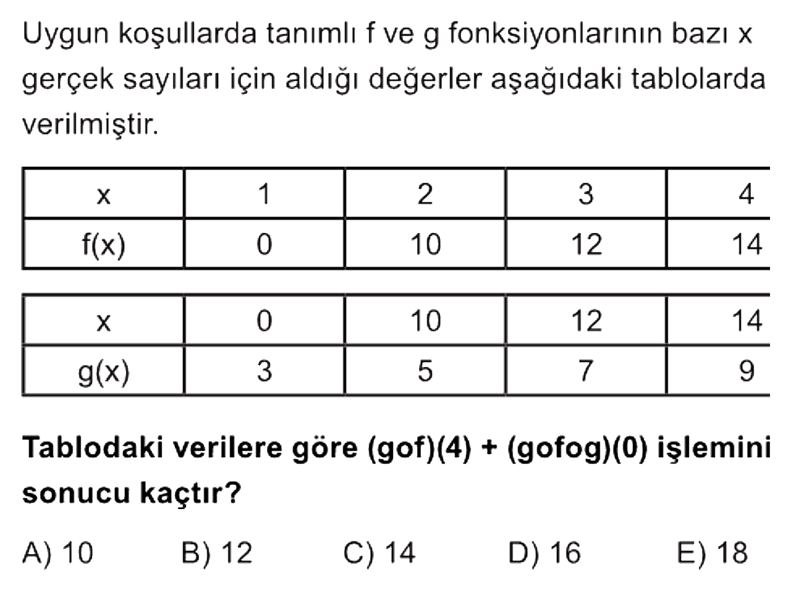
Çözüm
- $f(4)=14$, $g(14)=9$: $(g\circ f)(4)=9$.
- $g(0)=3$, $f(3)=12$, $g(12)=7$: $(g\circ f\circ g)(0)=7$.
- Toplam $16$ (D).
Cevap: D
Soru 3Cevap: C
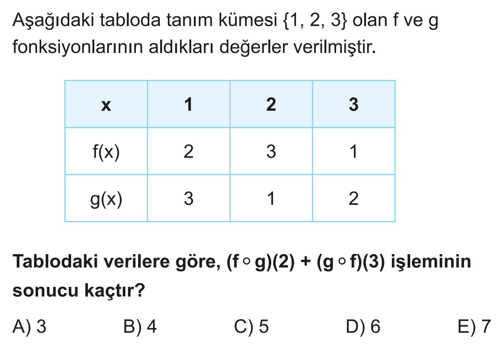
Çözüm
- $g(2)=1$, $f(1)=2$: $(f\circ g)(2)=2$.
- $f(3)=1$, $g(1)=3$: $(g\circ f)(3)=3$.
- Toplam $5$ (C).
Cevap: C
Soru 4Cevap: C
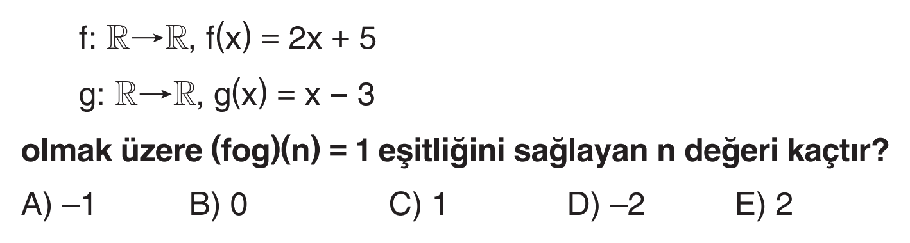
Çözüm
- $(f\circ g)(n)=2(n-3)+5=2n-1$.
- $2n-1=1$.
- $n=1$ (C).
Cevap: C
Soru 5Cevap: C
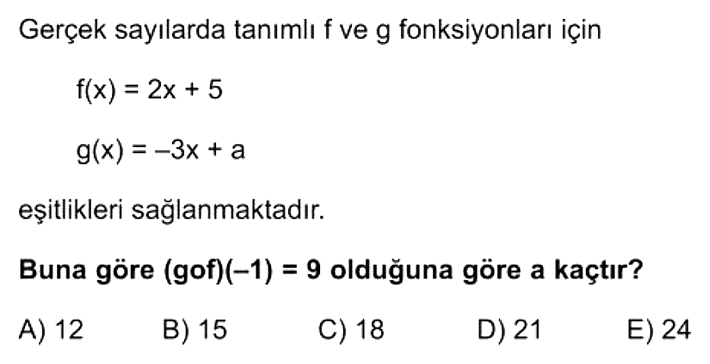
Çözüm
- $f(-1)=3$.
- $g(3)=-9+a=9$.
- $a=18$ (C).
Cevap: C
Soru 6Cevap: B
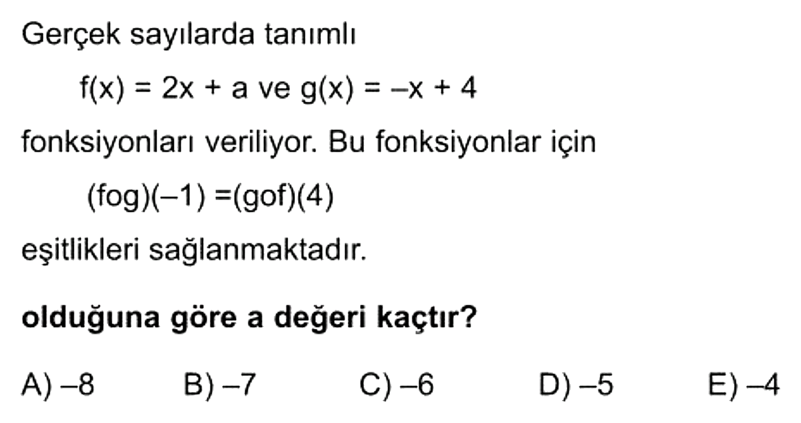
Çözüm
- $(f\circ g)(-1)=f(5)=10+a$.
- $(g\circ f)(4)=-(8+a)+4=-4-a$.
- $10+a=-4-a\Rightarrow a=-7$ (B).
Cevap: B
Soru 7Cevap: D
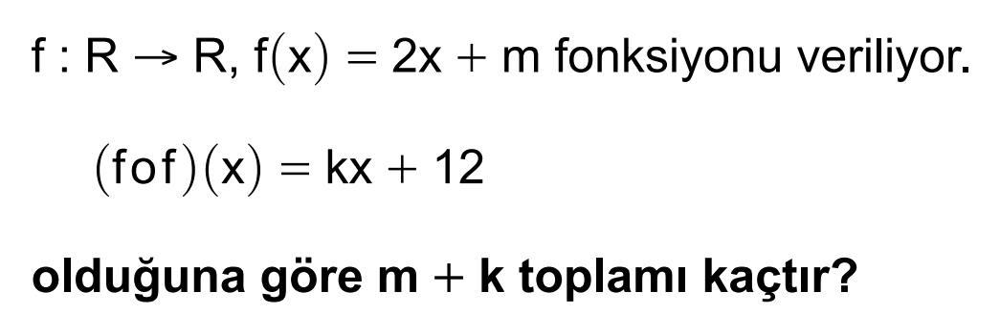
A)$4$B)$5$C)$6$D)$8$E)$12$
Çözüm
- $(f\circ f)(x)=2(2x+m)+m=4x+3m$.
- $4x+3m=kx+12\Rightarrow k=4$, $m=4$.
- $m+k=8$ (D).
Cevap: D
Soru 8Cevap: A
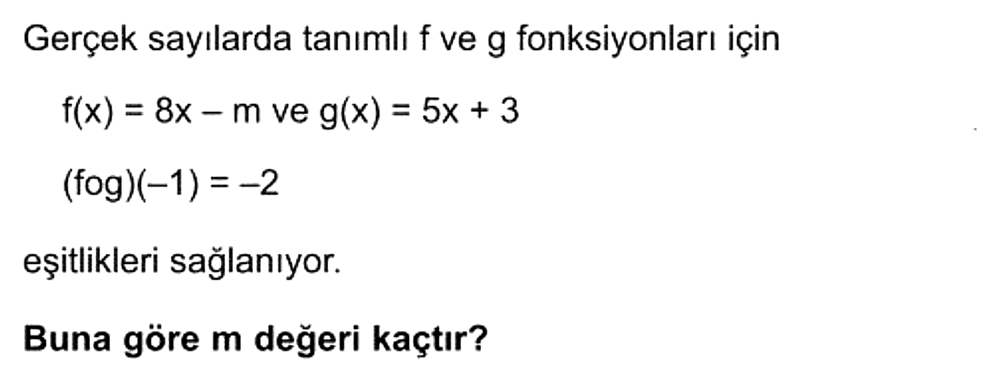
A)$-14$B)$-12$C)$-10$D)$14$E)$18$
Çözüm
- $g(-1)=-2$.
- $f(-2)=-16-m=-2$.
- $m=-14$ (A).
Cevap: A
Soru 9Cevap: B
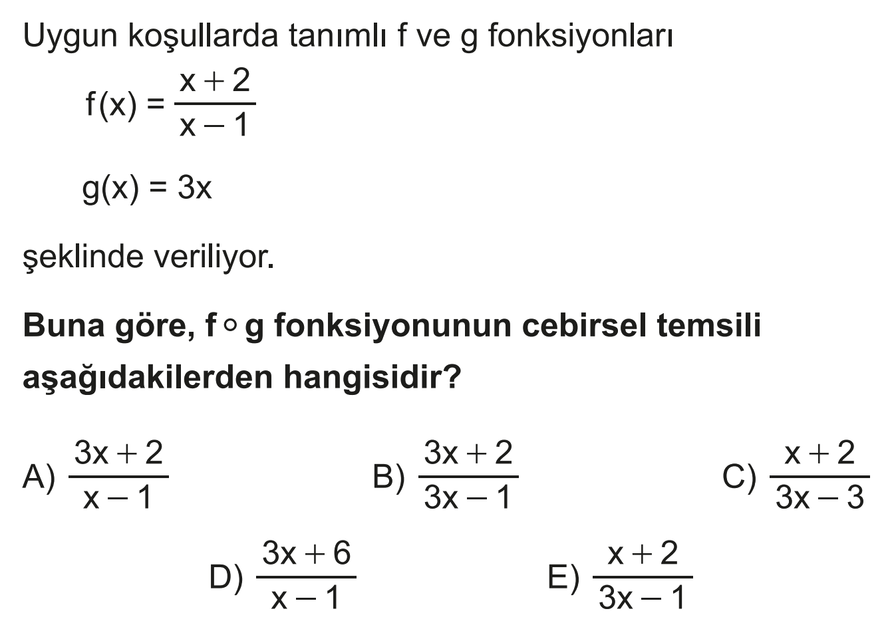
Çözüm
- $(f\circ g)(x)=\dfrac{g(x)+2}{g(x)-1}$.
- $g(x)=3x$ yazılır.
- $\dfrac{3x+2}{3x-1}$ (B).
Cevap: B
Soru 10Cevap: B
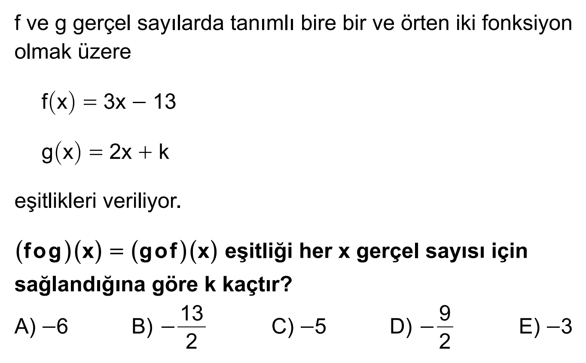
Çözüm
- $(f\circ g)(x)=3(2x+k)-13=6x+3k-13$.
- $(g\circ f)(x)=2(3x-13)+k=6x-26+k$.
- $3k-13=k-26\Rightarrow k=-\dfrac{13}{2}$ (B).
Cevap: B
Soru 11Cevap: A
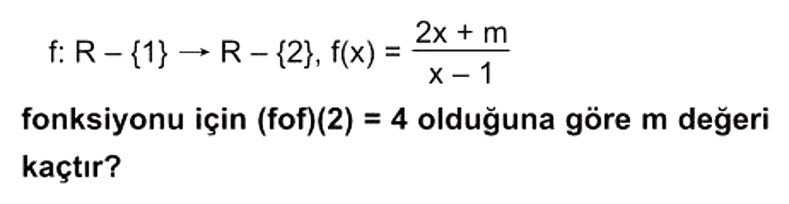
A)$-4$B)$-2$C)$2$D)$4$E)$6$
Çözüm
- $f(2)=4+m$.
- $f(4+m)=\dfrac{8+3m}{3+m}=4\Rightarrow8+3m=12+4m$.
- $m=-4$ (A).
Cevap: A
Soru 12Cevap: C
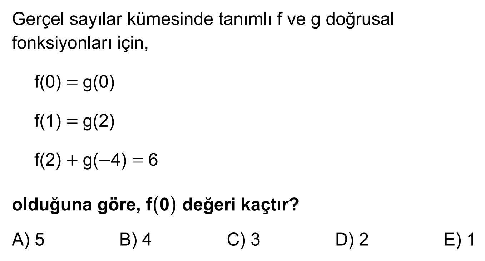
Çözüm
- $f(x)=ax+b$, $g(x)=cx+d$: $f(0)=g(0)\Rightarrow b=d$.
- $f(1)=g(2)\Rightarrow a=2c$; $f(2)+g(-4)=2a+b-4c+d=2b=6$.
- $b=3$: $f(0)=3$ (C).
Cevap: C
Soru 13Cevap: A
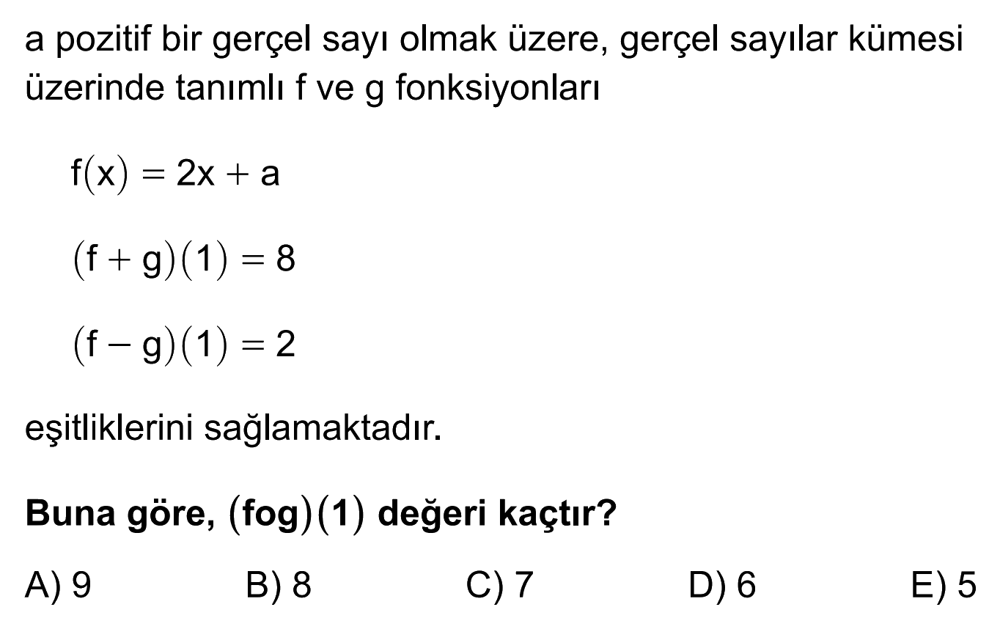
Çözüm
- Toplanırsa $2f(1)=10$: $f(1)=2+a=5$, $a=3$; $g(1)=3$.
- $f(x)=2x+3$.
- $(f\circ g)(1)=f(3)=9$ (A).
Cevap: A
Soru 14Cevap: D
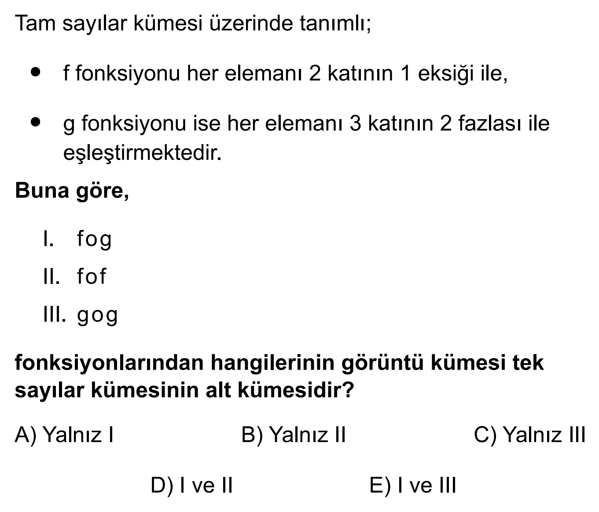
Çözüm
- $f(x)=2x-1$, $g(x)=3x+2$.
- $(f\circ g)(x)=6x+3$ ve $(f\circ f)(x)=4x-3$ her tam sayı için tektir.
- $(g\circ g)(x)=9x+8$ çift de olabilir: I ve II (D).
Cevap: D
Soru 15Cevap: D
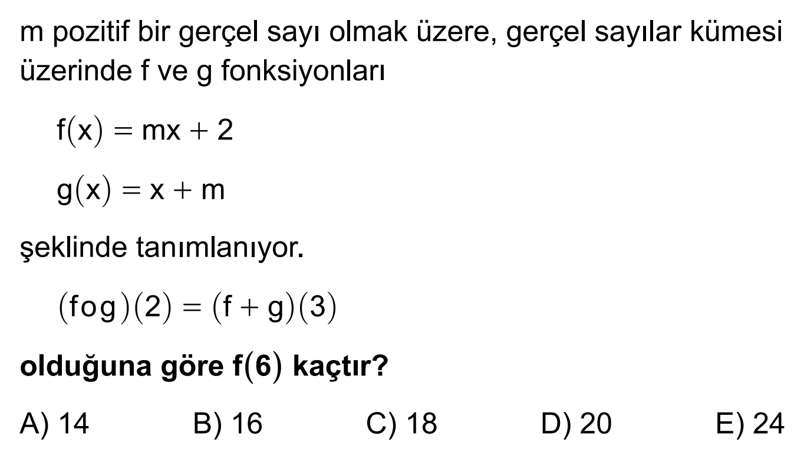
Çözüm
- $(f\circ g)(2)=f(2+m)=m(2+m)+2$; $(f+g)(3)=3m+2+3+m=4m+5$.
- $m^2+2m+2=4m+5\Rightarrow m^2-2m-3=0$; $m\gt0$: $m=3$.
- $f(x)=3x+2$: $f(6)=20$ (D).
Cevap: D
Soru 16Cevap: E
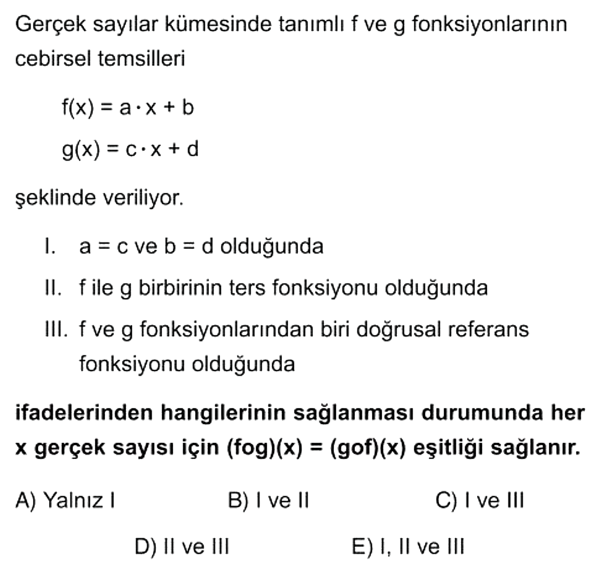
Çözüm
- I: $f=g$ ise $f\circ g=g\circ f$.
- II: birbirinin tersi ise ikisi de birim fonksiyondur.
- III: biri birim fonksiyon ise iki bileşke de diğer fonksiyona eşittir. Cevap E.
Cevap: E
Soru 17Cevap: A
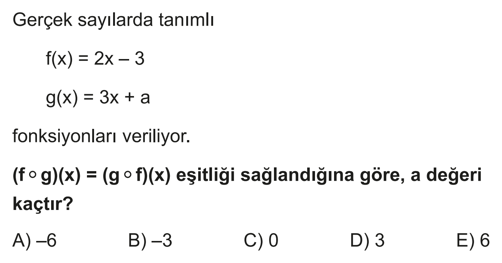
Çözüm
- $(f\circ g)(x)=2(3x+a)-3=6x+2a-3$.
- $(g\circ f)(x)=3(2x-3)+a=6x-9+a$.
- $2a-3=a-9\Rightarrow a=-6$ (A).
Cevap: A
Soru 18Cevap: B
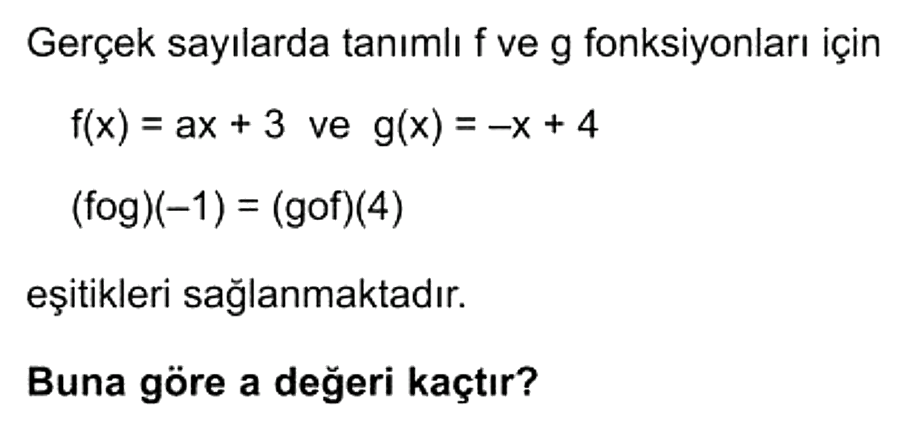
A)$-\dfrac49$B)$-\dfrac29$C)$\dfrac29$D)$\dfrac49$E)$1$
Çözüm
- $(f\circ g)(-1)=f(5)=5a+3$.
- $(g\circ f)(4)=-(4a+3)+4=1-4a$.
- $5a+3=1-4a\Rightarrow a=-\dfrac29$ (B).
Cevap: B
Soru 19Cevap: A
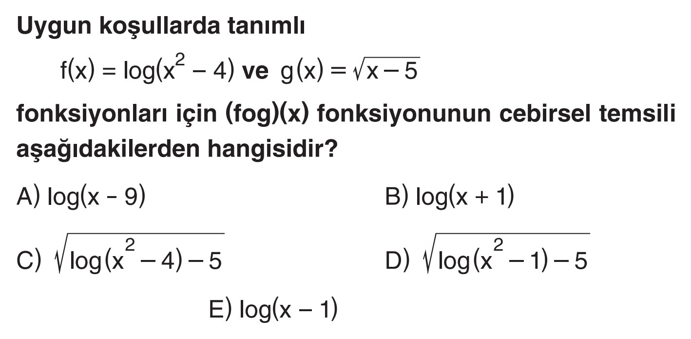
Çözüm
- $(f\circ g)(x)=\log\left((\sqrt{x-5})^2-4\right)$.
- $(\sqrt{x-5})^2=x-5$ ($x\ge5$).
- $\log(x-5-4)=\log(x-9)$ (A).
Cevap: A
Soru 20Cevap: E
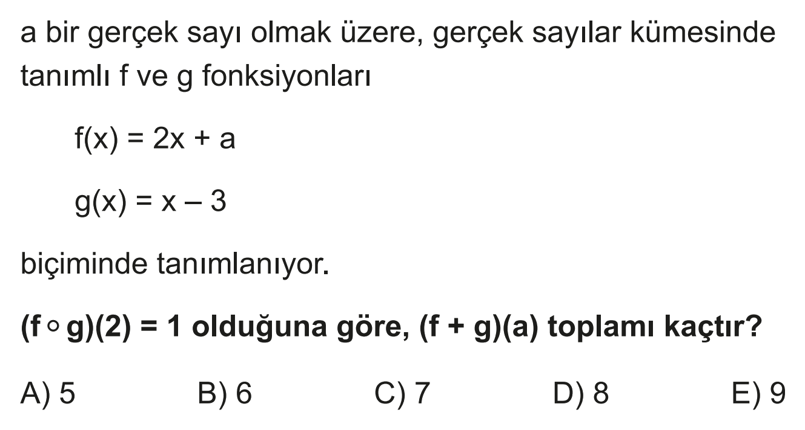
Çözüm
- $g(2)=-1$: $(f\circ g)(2)=f(-1)=-2+a=1\Rightarrow a=3$.
- $(f+g)(a)=(f+g)(3)=f(3)+g(3)$.
- $9+0=9$ (E).
Cevap: E
Soru 21Cevap: A
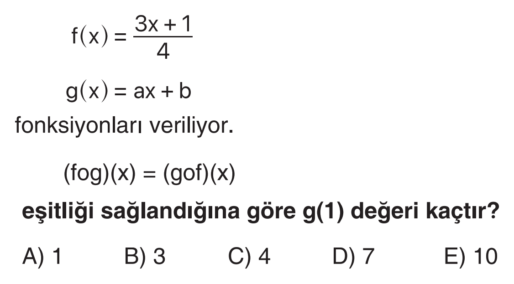
Çözüm
- $(f\circ g)(x)=\dfrac{3ax+3b+1}{4}$, $(g\circ f)(x)=\dfrac{3ax+a}{4}+b$.
- $3b+1=a+4b\Rightarrow a+b=1$.
- $g(1)=a+b=1$ (A).
Cevap: A
Soru 22Cevap: D
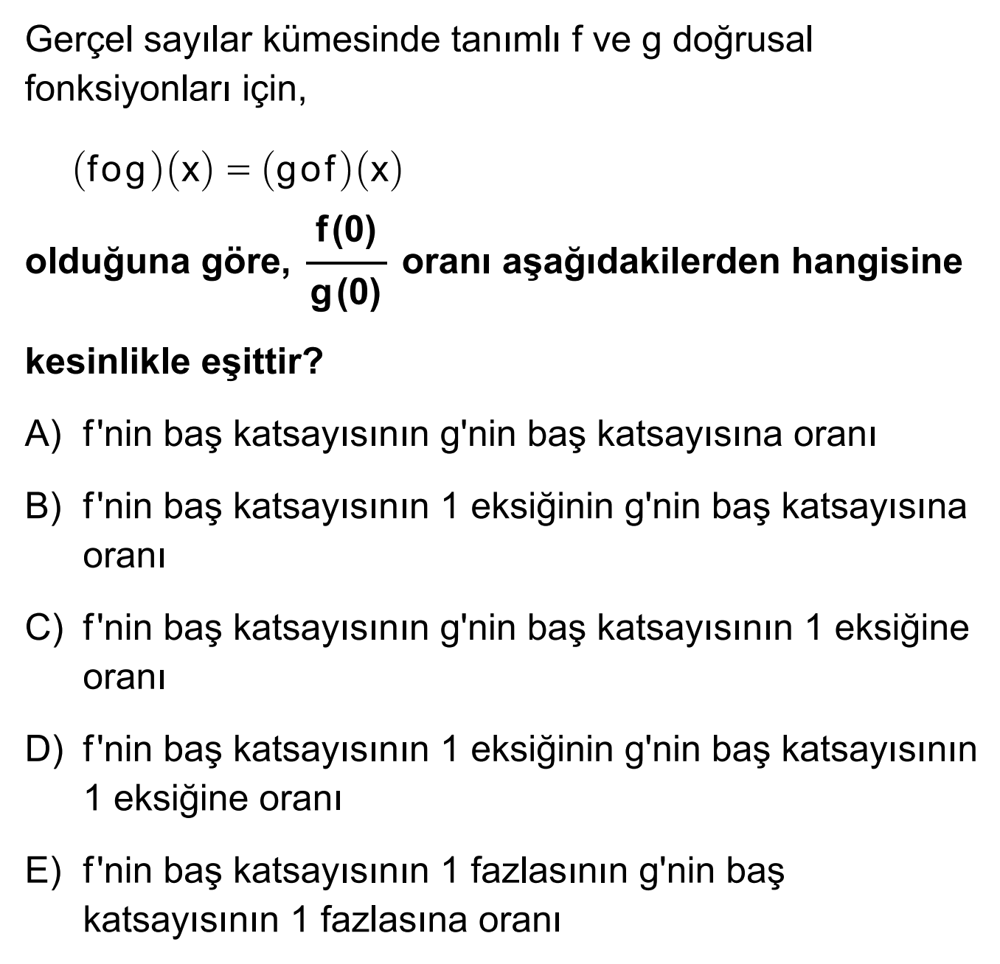
Çözüm
- $f(x)=ax+b$, $g(x)=cx+d$: $ad+b=bc+d$.
- $b(1-c)=d(1-a)\Rightarrow\dfrac bd=\dfrac{a-1}{c-1}$.
- $\dfrac{f(0)}{g(0)}=\dfrac bd$: baş katsayıların 1 eksiklerinin oranı (D).
Cevap: D
Soru 23Cevap: C
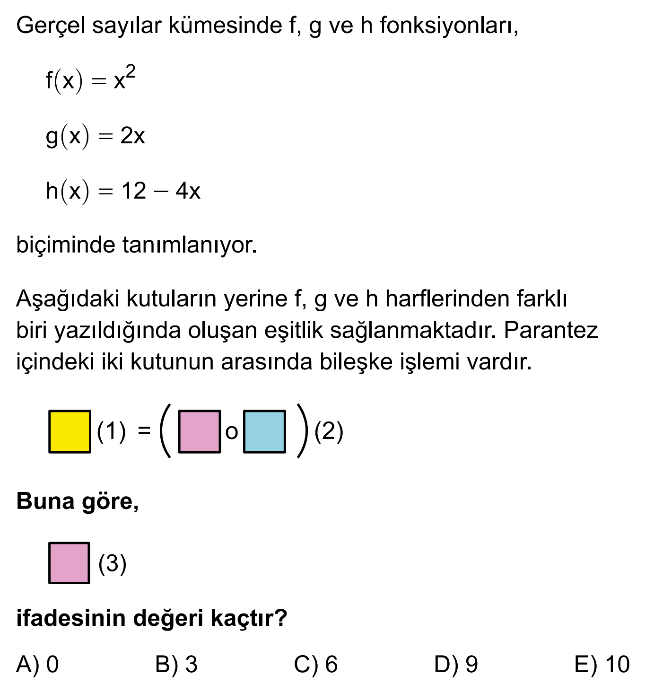
Çözüm
- Kutulara $f,g,h$ farklı yerleştirilir; $h(1)=8$ ve $g(f(2))=g(4)=8$ eşitliği sağlar.
- Diğer yerleşimler ($f(1)=1$ ya da $g(1)=2$ ile) hiçbir bileşke değerine eşit olmaz.
- Pembe kutu $g$: $g(3)=6$ (C).
Cevap: C
Soru 24Cevap: B
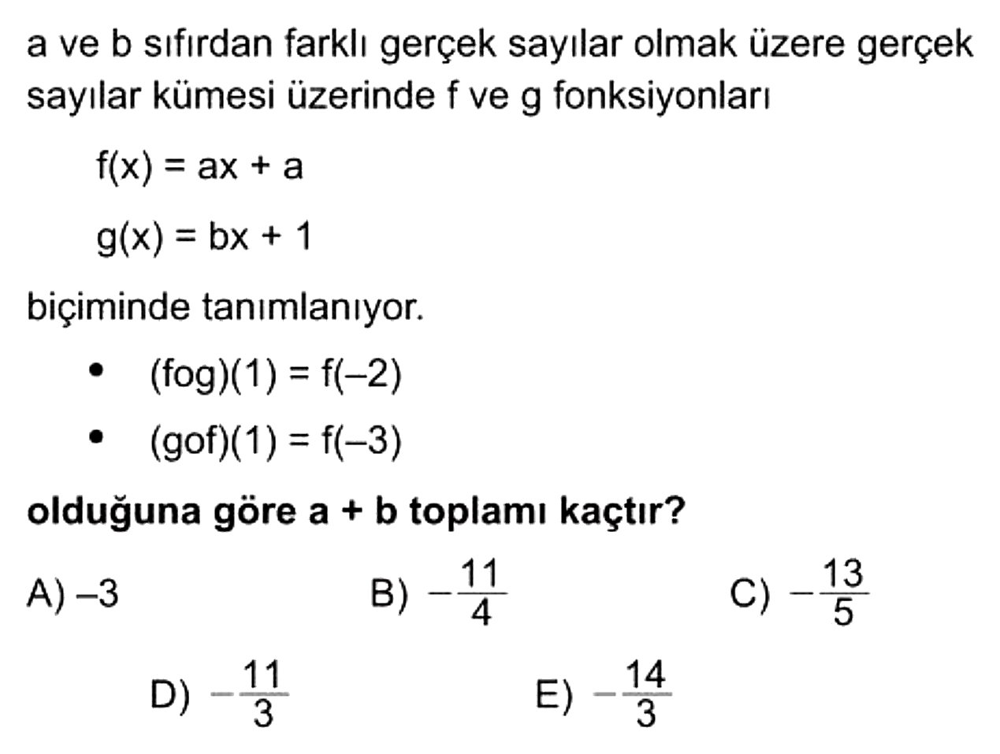
Çözüm
- $(f\circ g)(1)=f(b+1)=ab+2a$ ve $f(-2)=-a$: $a(b+3)=0\Rightarrow b=-3$.
- $(g\circ f)(1)=g(2a)=2ab+1=-6a+1$ ve $f(-3)=-2a$: $-6a+1=-2a\Rightarrow a=\dfrac14$.
- $a+b=-\dfrac{11}{4}$ (B).
Cevap: B